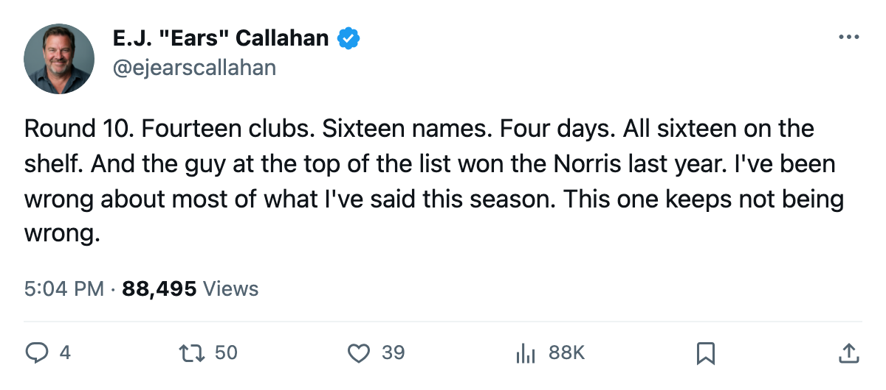
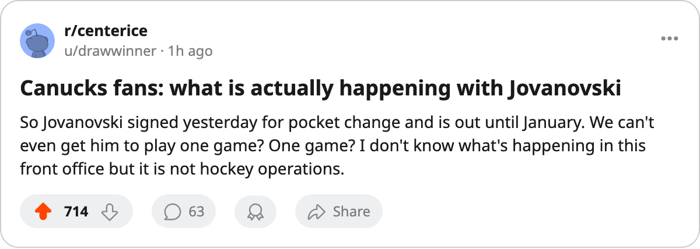

PHX
PHX NYI
NYI ANA
ANASign-and-Injure, Round 10: 16 Names in 4 Days. The Norris Winner Signed for $78,240. 🔥🔥🔥
The fastest burst the pattern has produced puts a Trophy-winning defenseman on the shelf until January 9.
 E.J. "Ears" CallahanInsider · The Hot Stove
E.J. "Ears" CallahanInsider · The Hot Stove
14 clubs filed 16 names Nov 17-20, all on IR, Norris winner at $78K is the biggest name yet

Fourteen clubs filed sixteen contracts between November 17 and November 20. Every one of those men is on the injured list today.
That is 4 filings a day, the fastest pace this pattern has produced. Round 8, the previous high-water mark, logged 17 names across 6 days by 14 clubs. This window covers 4 days. The prize name is bigger than anything the desk has tracked.
 Ed Jovanovski84 won last season's Norris Trophy. The Bureau's Book has him at 88 overall. He carried 20 games and 10 points at $2.30M on the contract-year table before
Ed Jovanovski84 won last season's Norris Trophy. The Bureau's Book has him at 88 overall. He carried 20 games and 10 points at $2.30M on the contract-year table before  Vancouver Canucks filed him on November 20 for $78,240. An ankle. Return date January 9. Vancouver lost its Norris Trophy winner on a one-day deal that cost less than
Vancouver Canucks filed him on November 20 for $78,240. An ankle. Return date January 9. Vancouver lost its Norris Trophy winner on a one-day deal that cost less than  St. Louis Blues paid
St. Louis Blues paid  Ivan Ciernik67 ($611,700) on the same date.
Ivan Ciernik67 ($611,700) on the same date.
 Henrik Sedin69 and Jovanovski share the November 20 filing: Sedin at $515,230, 73 overall, an elbow, back December 3.
Henrik Sedin69 and Jovanovski share the November 20 filing: Sedin at $515,230, 73 overall, an elbow, back December 3.  Dallas Stars filed
Dallas Stars filed  Claude Lemieux74 on November 18 and
Claude Lemieux74 on November 18 and  Richard Matvichuk74 on November 20. Lemieux, $47,490, carries an elbow, back December 5. Matvichuk, $202,900, has a neck, back November 29.
Richard Matvichuk74 on November 20. Lemieux, $47,490, carries an elbow, back December 5. Matvichuk, $202,900, has a neck, back November 29.
The unsigned pool still reads 0 names. Ten rounds, no arrivals on the open market.
| Player | Club | Overall | Signing | Injury | Return |
|---|---|---|---|---|---|
| Ed Jovanovski | VAN | 88 | $78,240 | Ankle | 2006-01-09 |
 Shane Doan79 Shane Doan79 | PHX | 83 | $643,040 | Neck | 2005-11-25 |
 Oleg Kvasha79 Oleg Kvasha79 | NYI | 79 | $559,250 | Foot | 2006-01-05 |
 Vaclav Prospal77 Vaclav Prospal77 | ANA | 77 | $416,410 | Ankle | 2005-12-17 |
 Aleksey Morozov76 Aleksey Morozov76 | PIT | 76 | $128,730 | Leg | 2005-11-25 |
 Matthew Barnaby78 Matthew Barnaby78 | NYR | 76 | $248,050 | Hand | 2005-12-01 |
 Daymond Langkow73 Daymond Langkow73 | EDM | 75 | $611,370 | Elbow | 2005-12-14 |
| Henrik Sedin | VAN | 73 | $515,230 | Elbow | 2005-12-03 |
 Chris Therien73 Chris Therien73 | PHI | 73 | $649,550 | Foot | 2005-12-29 |
| Claude Lemieux | DAL | 72 | $47,490 | Elbow | 2005-12-05 |
| Richard Matvichuk | DAL | 72 | $202,900 | Neck | 2005-11-29 |
| Michael Rupp74 | NJ | 72 | $465,200 | Wrist | 2005-11-27 |
 Karel Rachunek75 Karel Rachunek75 | OTT | 71 | $165,020 | Head | 2005-11-25 |
 Oleg Saprykin69 Oleg Saprykin69 | CGY | 71 | $86,150 | Knee | 2005-11-28 |
| Ivan Ciernik | STL | 71 | $611,700 | Groin | 2005-12-14 |
 Andy Sutton70 Andy Sutton70 | ATL | 68 | $648,440 | Arm | 2005-12-16 |
Three elbows in this batch: Sedin, Langkow and Lemieux. Two necks (Doan, Matvichuk), two ankles (Jovanovski, Prospal), two feet (Therien, Kvasha). The singles: knee, head, groin, leg, wrist, hand, arm.
The cheapest filing belongs to Lemieux at $47,490. The most expensive is Therien at $649,550. Jovanovski's $78,240 sits second from the bottom in a batch of sixteen contracts that left fourteen locker rooms thinner than they were on Friday.
Ten rounds now, since October. The desk has scored 1 hit against 22 misses across all its predictions this season. The one that counted:  Martin Straka83 still on
Martin Straka83 still on  Pittsburgh Penguins's roster, October 24. This pattern is the closest thing the desk has to a sure thing, and it just landed its heaviest fish.
Pittsburgh Penguins's roster, October 24. This pattern is the closest thing the desk has to a sure thing, and it just landed its heaviest fish.

